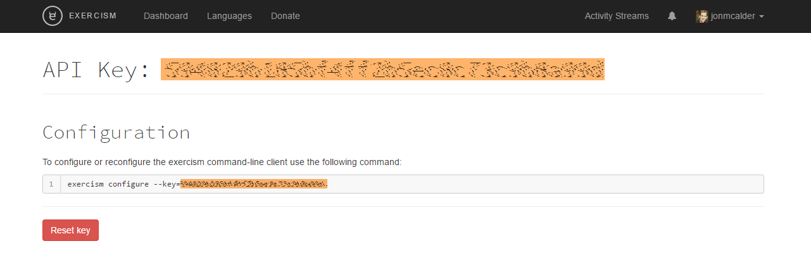

This package is designed to make it easy for R users to work through the R track on exercism.io.
It is not a complete replacement for the Exercism CLI, but instead provides easy access to the most commonly used CLI functionality:
- fetch problems
- skip problems
- submit solutions
- check status/progress
Setup
There are two essential steps which must be completed before you can make use of this R package:
- set your API key
- set your exercism path
Set your API key
Go to exercism.io -> account -> API key

Copy your API key (highlighted above in orange), and then run:
set_api_key("<your_API_key>")
# e.g.
# set_api_key("1a2b3c4d5e6f7g8h1a2b3c4d5e6f7g8h")Set exercism path
set_exercism_path("<path_to_your_exercism_directory>")
# e.g.
# set_exercism_path("C:/Users/Jon/exercism") # Windows example
# set_exercism_path("~/exercism") # Mac & Linux example
# set_exercism_path() # Use defaultNote that the exercism_path referred to here should be the root directory for exercism (i.e. not the R sub-directory).
By default the exercism command-line client (CLI) fetches exercises to ~/exercism. If you have previously used the CLI and have not changed the default directory, then just run set_exercism_path() (i.e. with no path argument) and this will use the default exercism directory.
Once you’ve set your API key and exercism path these will be remembered for future R sessions.
Usage
Note that all track-specific functions will default to the R track if the track_id argument is not specified.
Fetch problems
Get the next problem:
fetch_next()Get a specific problem:
fetch_problem(slug = "leap")
fetch_problem(slug = "bob", track_id = "python")RStudio Addin
The core functionality mentioned above is also accessible via an RStudio Addin. You can access it via the Addins menu, or by running exercism_addin().
Contribute
If you encounter any problems while using this package please raise them on the issues page. You can also use this page to offer any suggestions for improvement.